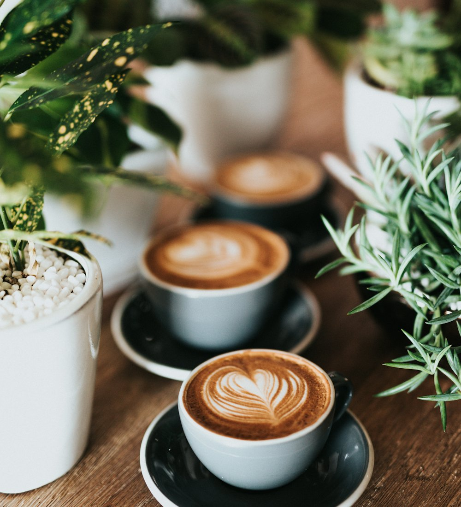
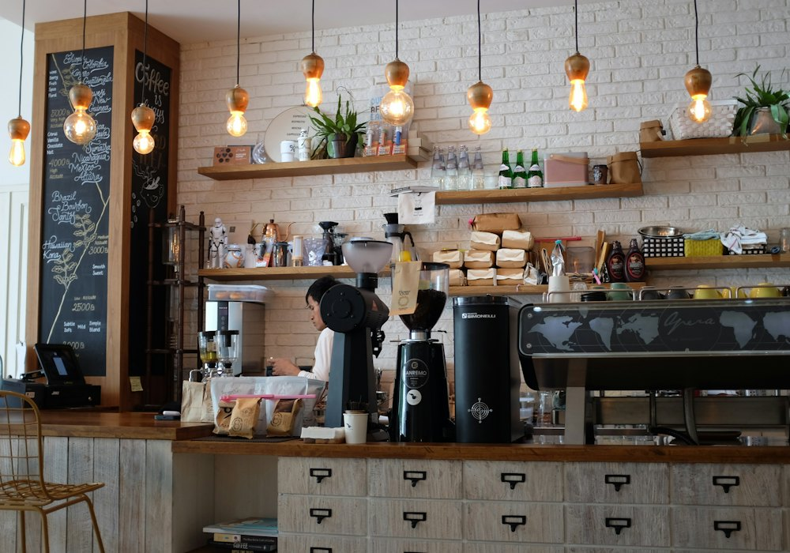

Arte · Técnica · Pasión
El café
como
disciplina
Somos un espacio dedicado al barismo, al arte latte y al café de especialidad. Cada taza es el resultado de un proceso cuidado: del origen del grano a la textura de la leche.

Nuestra historia
Sobre nosotros
Del oficio de barista a una comunidad cafetera
Barismo & Café nació en 2019 como una pequeña barra de espresso en Palermo. Hoy tostamos nuestros propios granos, formamos baristas y compartimos la cultura del café de especialidad con quienes nos visitan.
- 12
- +900
- 6

Descubrí
Lo que hacemos
Tres formas de vivir el café
Nuestro menú
Espressos, bebidas con leche y fríos preparados con granos de origen único.
Ver nuestro menú →Talleres
Aprendé barismo y arte latte con nuestro equipo, desde cero hasta nivel avanzado.
Ver talleres →Testimonios
Lo que dicen nuestros clientes
Opiniones reales de quienes nos visitan
“El mejor espresso que tomé en mi vida. La extracción es perfecta, con una crema densa y notas de chocolate oscuro.”
“Hice el taller de Arte Latte y salí haciendo rosetas. Los baristas explican con una paciencia increíble.”
“El Cold Brew con tónica es una experiencia. Nunca pensé que el café podía ser tan refrescante y complejo.”